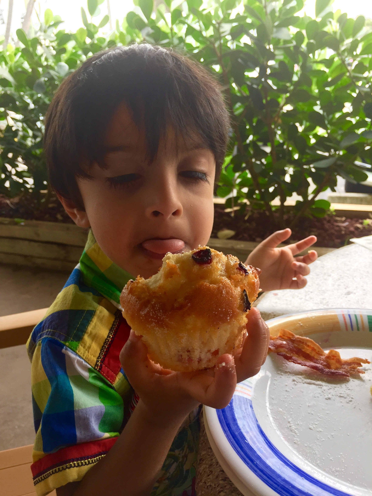
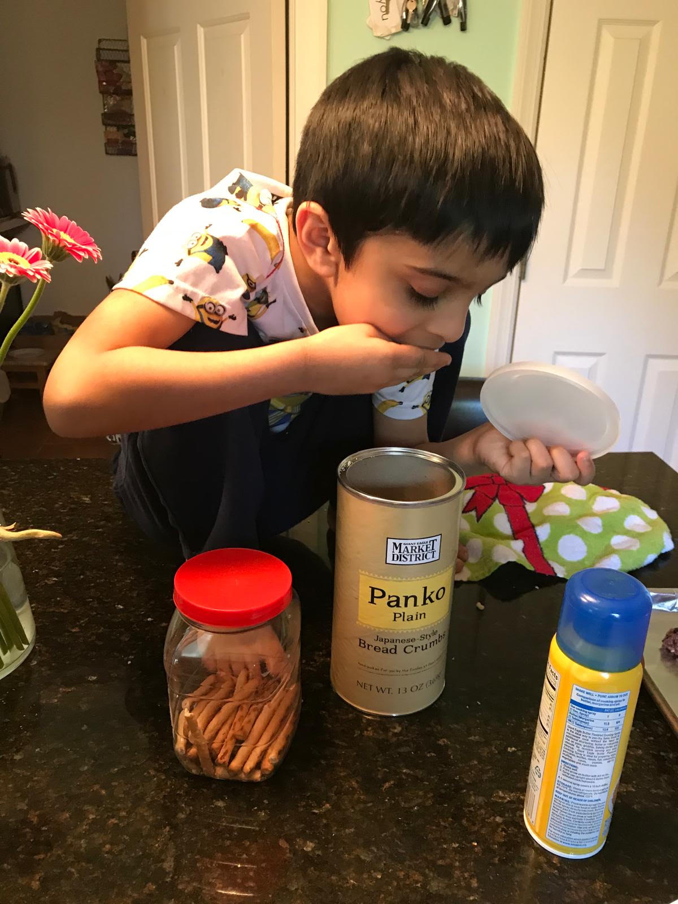
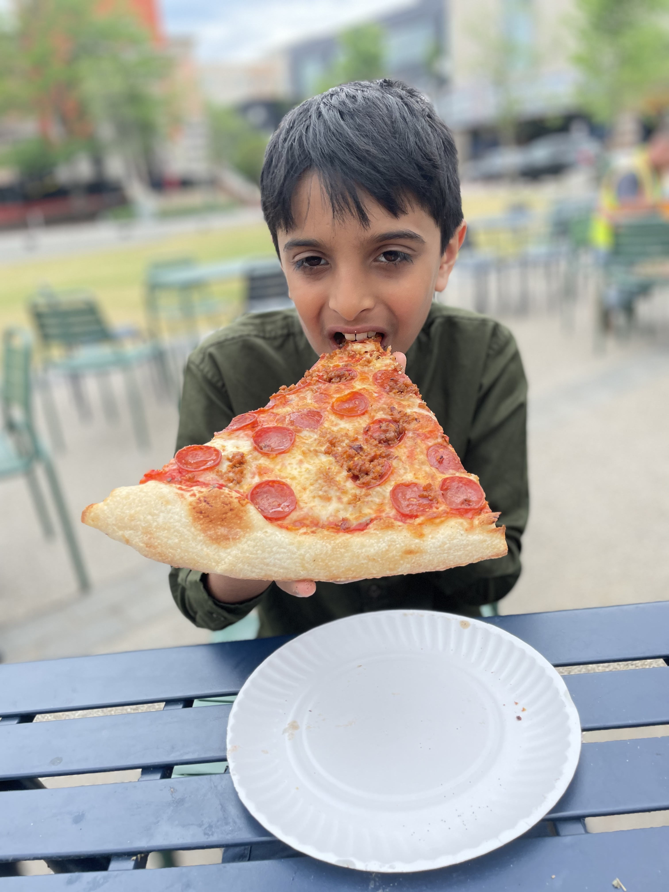
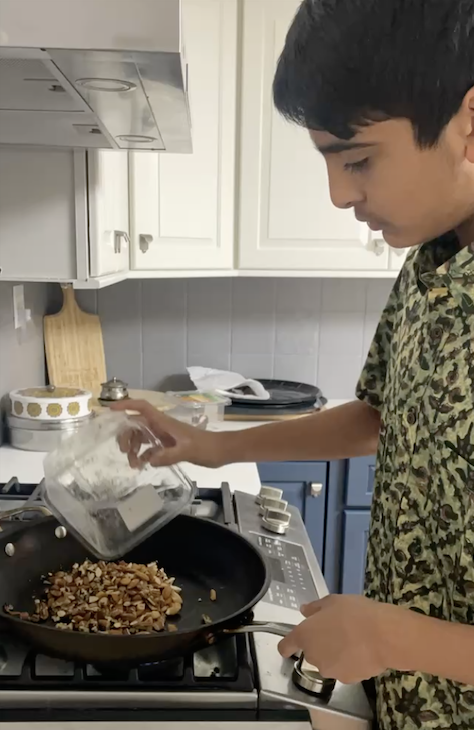

From age 3 to now
A visual log of how my cooking has grown over the years — dishes, techniques, and the events along the way. This is the long-term thread, not something I picked up recently.

First started cooking alongside family in the kitchen.

Started baking on my own — cookies and simple recipes first.

Began developing my own recipes and trying new cuisines.

Cooked for a group setting for the first time.

14 years old, 150+ people served across events, still going.
[Dish name]
[Describe the dish and what made it a milestone — a technique you mastered, a first, a challenge you solved.]
[Dish name]
[Describe the dish and what made it a milestone — a technique you mastered, a first, a challenge you solved.]
[Dish name]
[Describe the dish and what made it a milestone — a technique you mastered, a first, a challenge you solved.]